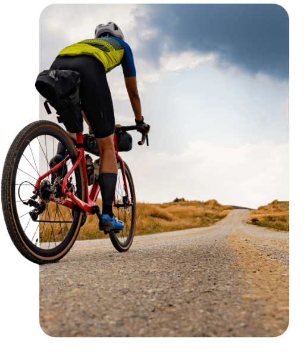
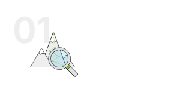
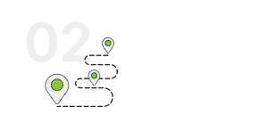
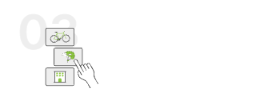

UN NUOVO
MODO DI
VIAGGIARE IN
BICI
Seleziona il tuo viaggio in bici tra una vasta scelta di
itinerari da un’unica piattaforma online

Cos'è Bikeit?
Bikeit nasce dall'esperienza di Snowit, tour operator digitale leader in
Europa per l'organizzazione di viaggi in montagna. Bikeit punta a
rivoluzionare il settore del cicloturismo. Una piattaforma semplice e
veloce che centralizza i migliori itinerari al mondo da percorrere in bici.
Itinerari in giro per il mondo
Con Bikeit potrai selezionare il viaggio in bici che più fa al caso tuo,
scegliendo tra numerosi itinerari mozzafiato in Italia, in Europa e
oltremare.
Partenze Self-guided e guided
Gli itinerari self-guided ti permetteranno di viaggiare in maniera
indipendente seguendo i tuoi ritmi. Negli itinerari guided potrai
contare sul supporto e sui consigli di una guida esperta.
Alloggi bike-friendly
Soggiorna in alloggi caratteristici con servizi dedicati e rimettiti in
forze prima della prossima pedalata.
Viaggia senza pensieri
Qualsiasi itinerario Bikeit è pensato per darti la libertà di vivere ogni
momento al massimo. Tutte le tappe prevedono la possibilità di
usufruire di servizi comfort tra cui trasporto bagagli e assistenza
dedicata.
Prenota con un click
L'esperienza digitale di Bikeit ti aiuterà a prenotare il tuo pacchetto
con estrema facilità. Potrai acquistare il tuo itinerario nella maniera
più semplice e riceverai tutte le informazioni di cui hai bisogno.

Seleziona la destinazione e trova
l’itinerario più conforme al tuo livello.
Potrai scegliere tra una vasta proposta
di viaggi in tutto il mondo.

Una volta trovato l’itinerario ideale,
consulta la scheda prodotto con tutte le
caratteristiche e specifiche del tuo
viaggio.

Nella personalizzazione del tuo
pacchetto, potrai includere il noleggio
della bici o scegliere di portare il tuo
mezzo.

Completa l’ordine e preparati per la tua
prossima avventura. Dovrai solo goderti
il viaggio, al resto ci pensa Bikeit!
Weekend lungo nelle Langhe stupendo, lo consiglio a
tutti coloro che vogliono farsi un po' di bici
ma allo stesso tempo godersi il territorio tra degustazioni,
spa e relax. Ho sempre
desiderato fare un viaggio in bici ma non avevo mai
trovato una piattaforma che mi aiutasse
ad organizzarlo. Bikeit ha tutto il necessario: percorso,
alloggio, noleggio bici ed esperienze sul territorio!
Weekend lungo nelle Langhe stupendo, lo consiglio a
tutti coloro che vogliono farsi un po' di bici
ma allo stesso tempo godersi il territorio tra degustazioni,
spa e relax. Ho sempre
desiderato fare un viaggio in bici ma non avevo mai
trovato una piattaforma che mi aiutasse
ad organizzarlo. Bikeit ha tutto il necessario: percorso,
alloggio, noleggio bici ed esperienze sul territorio!
Weekend lungo nelle Langhe stupendo, lo consiglio a
tutti coloro che vogliono farsi un po' di bici
ma allo stesso tempo godersi il territorio tra degustazioni,
spa e relax. Ho sempre
desiderato fare un viaggio in bici ma non avevo mai
trovato una piattaforma che mi aiutasse
ad organizzarlo. Bikeit ha tutto il necessario: percorso,
alloggio, noleggio bici ed esperienze sul territorio!
Weekend lungo nelle Langhe stupendo, lo consiglio a
tutti coloro che vogliono farsi un po' di bici
ma allo stesso tempo godersi il territorio tra degustazioni,
spa e relax. Ho sempre
desiderato fare un viaggio in bici ma non avevo mai
trovato una piattaforma che mi aiutasse
ad organizzarlo. Bikeit ha tutto il necessario: percorso,
alloggio, noleggio bici ed esperienze sul territorio!
Weekend lungo nelle Langhe stupendo, lo consiglio a
tutti coloro che vogliono farsi un po' di bici
ma allo stesso tempo godersi il territorio tra degustazioni,
spa e relax. Ho sempre
desiderato fare un viaggio in bici ma non avevo mai
trovato una piattaforma che mi aiutasse
ad organizzarlo. Bikeit ha tutto il necessario: percorso,
alloggio, noleggio bici ed esperienze sul territorio!